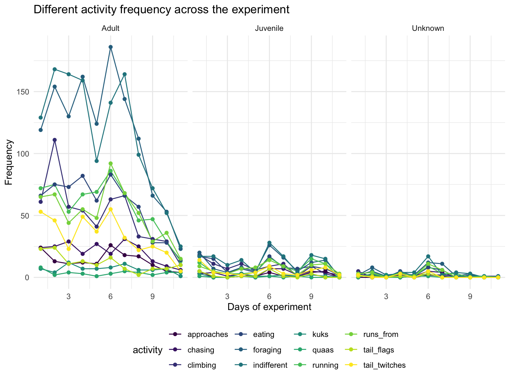

squrriel = read_csv("./data/2018_Central_Park_Squirrel_Census_-_Squirrel_Data.csv") %>%
janitor::clean_names()
skimr::skim(squrriel) # observe the distribution of our datasetreclassify some variables with missing values. give character variables different level. Create new variable to represent research date for futher work.
squrriel = read_csv("./data/2018_Central_Park_Squirrel_Census_-_Squirrel_Data.csv") %>%
janitor::clean_names() %>%
mutate(age_group = ifelse(age %in% "Adult","Adult",ifelse(age %in% "Juvenile","Juvenile","Unknown")),
age_group = fct_relevel(as.factor(age_group),c("Juvenile","Adult","Unknown")),
location = fct_relevel(as.factor(location),c("Above Ground","Ground Plane")),
primary_fur_color = fct_relevel(as.factor(primary_fur_color),c("Cinnamon","Gray","Black"))) %>%
separate(date,into=c('day','year'),sep=4) %>%
separate(day,into = c('month','Date'), sep=2) %>%
mutate(Day = recode(Date, "06"="Day1", "07"="Day2", "08"="Day3", "10"="Day4", "12"="Day5", "13"="Day6", "14"="Day7", "17"="Day8", "18"="Day9", "19"="Day10", "20"="Day11"),
Day = fct_relevel(Day, c("Day1", "Day2", "Day3", "Day4", "Day5", "Day6", "Day7", "Day8", "Day9", "Day10", "Day11")))squrriel %>%
mutate(Day = recode(Day, "Day1"=1, "Day2"=2, "Day3"=3, "Day4"=4, "Day5"=5, "Day6"=6, "Day7"=7, "Day8"=8, "Day9"=9, "Day10"=10, "Day11"=11),
age_group = ifelse(age_group %in% "Juvenile", "Juvenile",ifelse(age_group %in% "Adult", "Adult", "Unknown"))) %>%
group_by(Day, age_group) %>%
summarise(
running = sum(running == "TRUE"),
chasing = sum(chasing == "TRUE"),
climbing = sum(climbing == "TRUE"),
eating = sum(eating == "TRUE"),
approaches = sum(approaches == "TRUE"),
foraging = sum(foraging == "TRUE"),
indifferent = sum(indifferent == "TRUE"),
kuks = sum(kuks == "TRUE"),
quaas = sum(quaas == "TRUE"),
runs_from = sum(runs_from == "TRUE"),
tail_flags = sum(tail_flags == "TRUE"),
tail_twitches = sum( tail_twitches== "TRUE")
) %>%
pivot_longer(
running:tail_twitches,
names_to = "activity",
values_to = "number_of_ture")%>%
mutate(activity = as.factor(activity)) %>%
ggplot(aes(x=Day, y=number_of_ture, group=activity))+
geom_line(aes(color=activity))+
geom_point(aes(color=activity))+
facet_grid(.~age_group)+
labs(
title = "Different activity frequency across the experiment",
x= "Days of experiment",
y = "Frequency"
)
This graph shows the number of different activities across the period of experiment in each age group. We can see the decreased trend of number of each activity at the end of experiment
Then we reclassified the activity based on if they were interacted with people. And generated a bar graph describing their frequency.
squrriel %>%
group_by(Day) %>%
summarise(
running = sum(running == "TRUE"),
chasing = sum(chasing == "TRUE"),
climbing = sum(climbing == "TRUE"),
eating = sum(eating == "TRUE"),
approaches = sum(approaches == "TRUE"),
foraging = sum(foraging == "TRUE"),
indifferent = sum(indifferent == "TRUE"),
kuks = sum(kuks == "TRUE"),
quaas = sum(quaas == "TRUE"),
runs_from = sum(runs_from == "TRUE"),
tail_flags = sum(tail_flags == "TRUE"),
tail_twitches = sum( tail_twitches== "TRUE")
) %>%
mutate(noninteraction = running + chasing + climbing + eating + foraging,
interaction = kuks + quaas + tail_flags + tail_twitches + indifferent + runs_from) %>%
select(Day,noninteraction, interaction) %>%
plot_ly(x = ~Day, y = ~interaction, type = 'bar', name = 'Interaction', marker = list(color = 'rgb(149,130,189)')) %>%
add_trace(y = ~noninteraction, name = 'Noninteraction', marker = list(color = 'rgb(100,100,100)')) %>%
layout(title="Frequency of Dichotomized Activity Among All Sighting Day",
xaxis = list(title = "Day", tickangle = -45),
yaxis = list(title = "Frequency"),
margin = list(b = 200),
barmode = 'group')